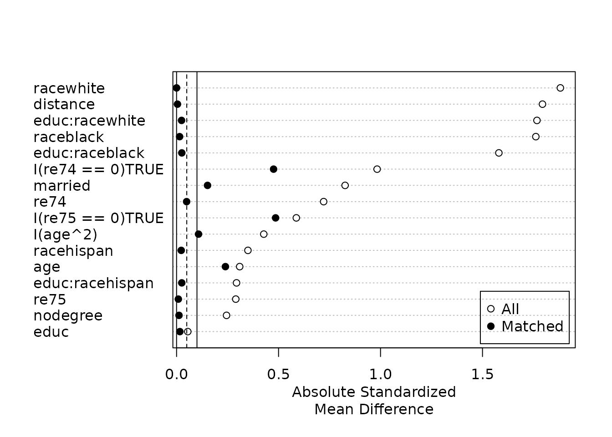
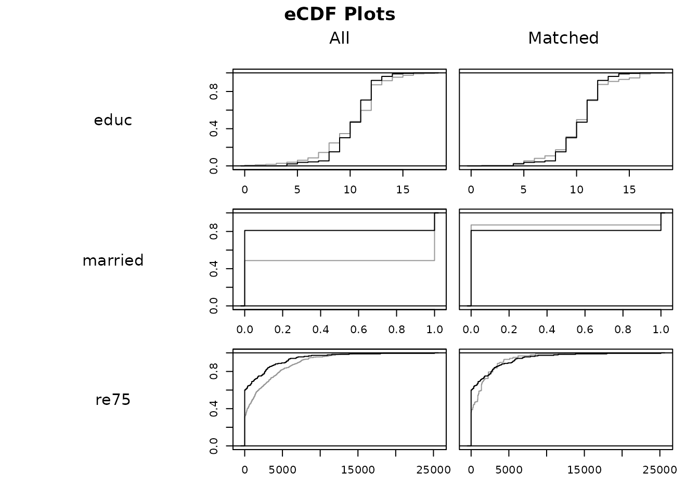
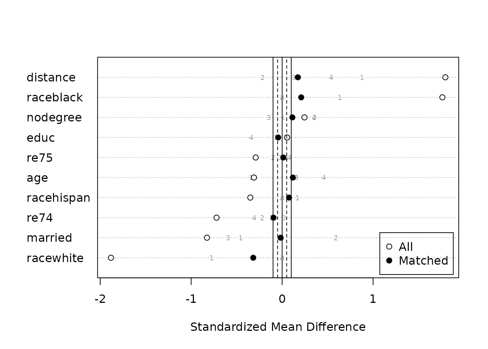
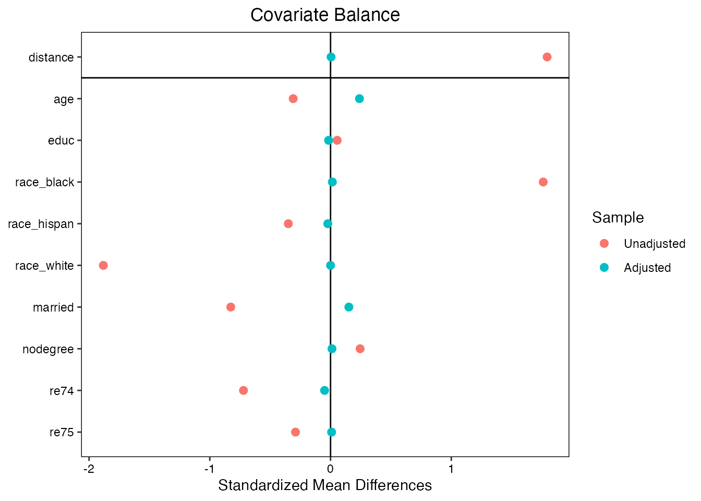

Assessing Balance
Noah Greifer
2020-11-23
Source:vignettes/assessing-balance.Rmd
assessing-balance.RmdIntroduction
Covariate balance is the degree to which the distribution of covariates is similar across levels of the treatment. It has three main roles in causal effect estimation using matching: 1) as a target to optimize with matching, 2) as a method of assessing the quality of the resulting matches, and 3) as evidence to an audience that the estimated effect is close to the true effect. When covariate balance is achieved, the resulting effect estimate is less sensitive to model misspecification and ideally close to true treatment effect. The benefit of randomization is that covariate balance is achieved automatically (in expectation), which is why unadjusted effects estimated from randomized trial data (in the absence of drop-out) can be validly interpreted as causal effects. When using matching to recover causal effect estimates form observational data, balance is not guaranteed and must be assessed.
This document provides instructions for assessing and reporting covariate balance as part of a matching analysis. The tools available in MatchIt for balance assessment should be used during the process of selecting a good matching scheme and ensuring that the chosen scheme is adequate. These tools implement the recommendations of Ho, Imai, King, and Stuart (2007) and others for assessing balance.
In addition to the tools available in matchIt, the cobalt package has a suite of functions designed to assess and display balance and is directly compatible with MatchIt objects. cobalt has extensive documentation, but we describe some of its functionality here as a complement to the tools in MatchIt.
The structure of this document is as follows: first, we describe some of the recommendations for balance checking and their rationale; next, we describe the tools for assessing balance present in MatchIt and display their use in evaluating several matching schemes; finally; we briefly describe some of the functionality in cobalt to extend that in MatchIt.
Recommendations for Balance Assessment
Assessing balance involves assessing whether the distributions of covariates are similar between the treated and control groups. Balance is typically assessed by examining univariate balance summary statistics for each covariate, though more complicated methods exist for assessing joint distributional balance as well. Visual depictions of distributional balance can be a helpful complement to numerical summaries, especially for hard to balance and prognostically important covariates.
Many recommendations for balance assessment have been described in the methodological literature. Unfortunately, there is no single best way to assess balance or to weigh balance summary statistics because the degree and form of balance that will yield the least bias in an effect estimate depends on unknown qualities of the outcome data-generating model. Nonetheless, there are a number of valuable recommendations that can be implemented to ensure matching is successful at eliminating or reducing bias. We review some of these here.
Common recommendations for assessing balance include the following:
Standardized mean differences. The standardized mean difference (SMD) is the difference in the means of each covariate between treatment groups standardized by a standardization factor so that it is on the same scale for all covariates. The standardization factor is typically the standard deviation of the covariate in the treated group when targeting the ATT or the pooled standard deviation across both groups when targeting the ATE. The standardization factor should be the same before and after matching to ensure changes in the mean difference are not confounded by changes in the standard deviation of the covariate. SMDs close to zero indicate good balance. Several recommended thresholds have been published in the literature; we recommend .1 and .05 for prognostically important covariates. Higher values may be acceptable when using covariate adjustment in the matched sample. In addition to computing SMDs on the covariates themselves, it is important to compute them on squares, cubes, and higher exponents as well as interactions between covariates. Several empirical studies have examined the appropriateness for using SMDs in balance assessment, including Belitser et al. (2011), Ali et al. (2014), and Stuart et al. (2013); in general, there is often a high correlation between the mean or maximum absolute SMD and the degree of bias in the treatment effect.
Variance Ratios. The variance ratio is the ratio of the variance of a covariate in one group to that in the other. Variance ratios close to 1 indicate good balance because they imply the variances of the samples are similar (Austin 2009).
Empirical CDF Statistics. Statistics related to the difference in the empirical cumulative density functions (eCDFs) of each covariate between groups allow assessment of imbalance across the entire covariate distribution of that covariate rather than just its mean or variance. The maximum eCDF difference, also known as the Kolmogorov-Smirnov statistic, is sometimes recommended as a useful supplement to SMDs for assessing balance (Austin and Stuart 2015) and is often used as a criterion to use in propensity score methods that attempt to optimize balance (e.g., McCaffrey, Ridgeway, and Morral 2004; Diamond and Sekhon 2013). Although the mean eCDF difference has not been as well studied, it provides a summary of imbalance that may be missed by relying solely on the maximum difference.
Visual Diagnostics. Visual diagnostics such as eCDF plots, empirical quantile-quantile (eQQ) plots, and kernel density plots can be used to see exactly how the covariate distributions differ from each other, i.e., where in the distribution the greatest imbalances are (Ho et al. 2007; Austin 2009). This can help to figure out how to tailor a matching method to target imbalance in a specific region of the covariate distribution.
Prognostic scores. The prognostic score is an estimate of the potential outcome under control for each unit (Hansen 2008). Balance on the prognostic score has been shown to be highly correlated with bias in the effect estimate, making it a useful tool in balance assessment (Stuart, Lee, and Leacy 2013). Estimating the prognostic score requires having access to the outcome data, and using it may be seen as violating the principle of separating the design and analysis stages of a matching analysis (Rubin 2001). However, because only the outcome values from the control group are required to use the prognostic score, some separation is maintained.
Several multivariate statistics exist that summarize balance across the entire joint covariate distribution. These can be functions of the above measures, like the mean or maximum absolute SMD or the generalized weighted distance (GWD; Franklin et al. 2014), which is the sum of SMDs for the covariates and their squares and interactions, or separate statistics that measure quantities that abstract away from the distribution of individual covariates, like the L1 distance (Iacus, King, and Porro 2011), cross-match test (Heller, Rosenbaum, and Small 2010), or energy distance (Huling and Mak 2020).
Balance on the propensity score has often been considered a useful measure of balance, but we do not necessarily recommend it except as a supplement to balance on the covariates. Propensity score balance will generally be good with any matching method regardless of the covariate balancing potential of the propensity score, so a balanced propensity score does not imply balanced covariates (Austin 2009). Similarly, it may happen that covariates may be well balanced even if the propensity score is not balanced, such as when covariates are prioritized above the propensity score in the matching specification (e.g., with genetic matching). Given these observations, the propensity score should not be relied upon for assessing covariate balance. Simulation studies by Stuart et al. (2013) provide evidence for this recommendation against relying on propensity score balance.
There has been some debate about the use of hypothesis tests, such as t-tests or Kolmogorov-Smirnov tests, for assessing covariate balance. The idea is that balance tests test the null hypothesis that the matched sample has equivalent balance to a randomized experiment. There are several problems with balance tests, described by Ho et al. (2007) and Imai et al. (2008): 1) balance is a property of the sample, not a of a population from which the sample was drawn; 2) the power of balance tests depends on the sample size, which changes during matching even if balance does not change; and 3) the use of hypothesis tests implies a uniform decision criterion for rejecting the null hypothesis (e.g., p-value less than .05, potentially with corrections for multiple comparisons), when balance should be improved without limit. MatchIt does not report any balance tests or p-values, instead relying on the descriptive statistics described above.
Recommendations for Balance Reporting
A variety of methods should be used when assessing balance to try to find an optimal matched set that will ideally yield a low-error estimate of the desired effect. However, reporting every balance statistic or plot in a research report or publication can be burdensome and unnecessary. That said, it is critical to report balance to demonstrate to readers that the resulting estimate is approximately unbiased and relies little on extrapolation or correct outcome model specification. We recommend the following in reporting balance in a matching analysis:
Report SMDs before and after matching for each covariate, any prognostically important interactions between covariates, and the prognostic score; this can be reported in a table or in a Love plot.
Report summaries of balance for other statistics, e.g., the largest mean and maximum eCDF difference among the covariates and the largest SMD among squares, cubes, and interactions of the covariates.
MatchIt provides tools for calculating each of these statistics so they can be reported with ease in a manuscript or report.
Assessing Balance with MatchIt
MatchIt contains several tools to assess balance numerically and graphically. The primary balance assessment function is summary.matchit(), which is called when using summary() on a MatchIt object and produces several tables of balance statistics before and after matching. plot.summary.matchit() generates a Love plot using R’s base graphics system containing the standardized mean differences resulting from a call to summary.matchit() and provides a nice way to display balance visually for inclusion in an article or report. plot.matchit() generates several plots that display different elements of covariate balance, including propensity score overlap and empirical quantile-quantile (eQQ) plots of the covariates. These functions together form a suite that can be used to assess and report balance in a variety of ways.
To demonstrate MatchIt’s balance assessment capabilities, we will use the Lalonde data included in MatchIt and used in vignette("MatchIt"). We will perform full matching on the propensity score, though the functionality is identical across all matching methods except propensity score subclassification, which we illustrate at the end.
library("MatchIt")
data("lalonde", package = "MatchIt")
#Full matching on a logistic regression PS
m.out <- matchit(treat ~ age + educ + race + married +
nodegree + re74 + re75, data = lalonde,
method = "full")
m.out## A matchit object
## - method: Optimal full matching
## - distance: Propensity score
## - estimated with logistic regression
## - number of obs.: 614 (original), 614 (matched)
## - target estimand: ATT
## - covariates: age, educ, race, married, nodegree, re74, re75
summary.matchit()
When summary() is called on a matchit object, several tables of information are displayed. These include balance statistics for each covariate before matching, balance statistics for each covariate after matching, the percent reduction in imbalance after matching, and the sample sizes before and after matching. summary.matchit() has four additional arguments that control how balance is computed:
-
interactionscontrols whether balance statistics for all squares and pairwise interactions of covariates are to be displayed in addition to the covariates. The default isFALSE, and setting toTRUEcan make the output massive when many covariates are present, but it is important to ensure no important interactions remain imbalanced. -
addlvariablesallows for balance to be assessed on variables other than those inside thematchitobject. For example, if the distance between units only relied on a subset of covariates but balance needed to be achieved on all covariates,addlvariablescould be used to supply these additional covariates. In addition to adding other variables,addlvariablescan be used to request balance on specific functions of the covariates already in thematchitobject, such as polynomial terms or interactions. The input toaddlvariablescan be a one-sided formula with the covariates and any desired transformations thereof on the right hand side, just like a model formula (e.g.,addlvariables = ~ X1 + X2 + I(X1^2)would request balance onX1,X2, and the square ofX1). Additional variables supplied toaddlvariablesbut not present in thematchitobject can be supplied as a data frame using thedataargument. -
standardizecontrols whether standardized or unstandardized statistics are to displayed. Standardized statistics include the standardized mean difference and eCDF statistics; unstandardized statistics include the raw difference in means and eQQ plot statistics. (Regardless, the variance ratio will always be displayed.). The default isTRUEfor standardized statistics, which are more common to report because they are all on the same scale regardless of the scale of the covariates1. -
pair.distcontrols whether within-pair distances should be computed and displayed. These reflect the average distance between units within the same pair, standardized or unstandardized according to the argument tostandardize. The default isTRUE. With full matching, exact matching, coarsened exact matching, and propensity score subclassification, computing pair distances can take a long time, and so it may be beneficial to set toFALSEin these cases.
In addition, the arguments un and improvement control whether balance prior to matching should be displayed and whether the percent balance improvement after matching should be displayed. These can be set to FALSE to reduce the output.
Below, we call summary.matchit() with addlvariables to display balance on covariates and a few functions of them in the matched sample. In particular, we request balance on the square of age, the variables representing whether re74 and re75 were equal to 0, and the interaction between educ and race.
##
## Call:
## matchit(formula = treat ~ age + educ + race + married + nodegree +
## re74 + re75, data = lalonde, method = "full")
##
## Summary of Balance for All Data:
## Means Treated Means Control Std. Mean Diff. Var. Ratio eCDF Mean eCDF Max
## distance 0.577 0.182 1.794 0.921 0.377 0.644
## age 25.816 28.030 -0.309 0.440 0.081 0.158
## educ 10.346 10.235 0.055 0.496 0.035 0.111
## raceblack 0.843 0.203 1.762 . 0.640 0.640
## racehispan 0.059 0.142 -0.350 . 0.083 0.083
## racewhite 0.097 0.655 -1.882 . 0.558 0.558
## married 0.189 0.513 -0.826 . 0.324 0.324
## nodegree 0.708 0.597 0.245 . 0.111 0.111
## re74 2095.574 5619.237 -0.721 0.518 0.225 0.447
## re75 1532.055 2466.484 -0.290 0.956 0.134 0.288
## I(age^2) 717.395 901.779 -0.428 0.363 0.081 0.158
## I(re74 == 0)TRUE 0.708 0.261 0.983 . 0.447 0.447
## I(re75 == 0)TRUE 0.600 0.312 0.587 . 0.288 0.288
## educ:raceblack 8.697 2.047 1.580 0.980 0.354 0.645
## educ:racehispan 0.578 1.263 -0.294 0.487 0.046 0.078
## educ:racewhite 1.070 6.925 -1.767 0.365 0.279 0.555
##
##
## Summary of Balance for Matched Data:
## Means Treated Means Control Std. Mean Diff. Var. Ratio eCDF Mean eCDF Max Std. Pair Dist.
## distance 0.577 0.576 0.006 0.992 0.004 0.049 0.019
## age 25.816 24.693 0.157 0.485 0.084 0.322 1.261
## educ 10.346 10.323 0.012 0.558 0.023 0.062 1.220
## raceblack 0.843 0.835 0.024 . 0.009 0.009 0.038
## racehispan 0.059 0.058 0.005 . 0.001 0.001 0.564
## racewhite 0.097 0.107 -0.033 . 0.010 0.010 0.417
## married 0.189 0.129 0.155 . 0.061 0.061 0.481
## nodegree 0.708 0.704 0.009 . 0.004 0.004 0.914
## re74 2095.574 2199.713 -0.021 1.201 0.038 0.235 0.867
## re75 1532.055 1524.836 0.002 2.005 0.065 0.231 0.793
## I(age^2) 717.395 713.248 0.010 0.420 0.084 0.322 1.263
## I(re74 == 0)TRUE 0.708 0.473 0.517 . 0.235 0.235 1.026
## I(re75 == 0)TRUE 0.600 0.369 0.471 . 0.231 0.231 0.857
## educ:raceblack 8.697 8.493 0.048 0.866 0.026 0.062 0.208
## educ:racehispan 0.578 0.579 -0.000 0.906 0.006 0.015 0.536
## educ:racewhite 1.070 1.250 -0.054 0.787 0.009 0.022 0.777
##
## Percent Balance Improvement:
## Std. Mean Diff. Var. Ratio eCDF Mean eCDF Max
## distance 99.7 90.0 99.0 92.5
## age 49.3 11.9 -3.0 -104.2
## educ 78.9 16.8 32.4 44.3
## raceblack 98.7 . 98.7 98.7
## racehispan 98.6 . 98.6 98.6
## racewhite 98.2 . 98.2 98.2
## married 81.2 . 81.2 81.2
## nodegree 96.3 . 96.3 96.3
## re74 97.0 72.2 83.0 47.4
## re75 99.2 -1456.4 51.5 19.8
## I(age^2) 97.8 14.5 -3.0 -104.2
## I(re74 == 0)TRUE 47.4 . 47.4 47.4
## I(re75 == 0)TRUE 19.8 . 19.8 19.8
## educ:raceblack 96.9 -612.1 92.7 90.4
## educ:racehispan 99.9 86.3 87.1 80.4
## educ:racewhite 96.9 76.2 96.6 96.0
##
## Sample Sizes:
## Control Treated
## All 429. 185
## Matched (ESS) 53.33 185
## Matched 429. 185
## Unmatched 0. 0
## Discarded 0. 0Let’s examine the output in detail. The first table (Summary of Balance for All Data) provides balance in the sample prior to matching. The included statistics are the mean of the covariates in the treated group (Means Treated), the mean of the covariate in the control group (Means Control), the SMDs (Std. Mean Diff.), the variance ratio (Var. Ratio), the average distance between the eCDFs of the covariate across the groups (eCDF Mean), and the largest distance between the eCDFs (eCDF Max). Setting un = FALSE would have suppressed the creation of this table.
The second table (Summary of Balance for Matched Data) contains all the same statistics in the matched sample. Because we implicitly request pair distance, an additional column for standardized pair distances (Std. Pair Dist.) is displayed.
The third table (Percent Balance Improvement) contains the percent balance improvement for each covariate. This is computed as \(100\frac{|\theta_M| - |\theta_U|}{|\theta_U|}\), where \(\theta_M\) is a given balance statistic in the matched sample and \(\theta_U\) is a the same balance statistic in the unmatched sample. Values between 0 and 100 indicate that balance improved after matching as measured by the statistic; values less than 0 indicate that balance got worse after matching. When balance is good on a covariate prior to matching, it can sometimes look like balance got a lot worse after matching even though the balance statistic is quite low, so these values should not be taken too seriously and should be used primarily as heuristics. Setting un = FALSE or improvement = FALSE would have suppressed the creation of this table.
The final table (Sample Sizes) contains the sizes of the samples before (All) and after (Matched) matching, as well as the number of units left unmatched (Unmatched) and the number of units dropped due to a common support restriction (Discarded).
The SMDs are computed as the difference mean divided by a standardization factor computed in the unmatched sample. An absolute SMD close to 0 indicates good balance; although a number of recommendations for acceptable values have appeared in the literature, we recommend absolute values less than .1 and less than .05 for potentially prognostically important variables.
The variance ratios are computed as the ratio of the variance of the treated group to that of the control group for each covariate. Variance ratios are not computed for binary covariates because they are a function of the prevalence in each group, which is captured in the mean difference and eCDF statistics. A variance ratio close to 1 indicates good balance; a commonly used recommendation is for variance ratios to be between .5 and 2.
The eCDF statistics correspond to the difference in the overall distributions of the covariates between the treatment groups. The values of both statistics range from 0 to 1, with values closer to zero indicating better balance. There are no specific recommendations for the values these statistics should take, though notably high values may indicate imbalance on higher moments of the covariates. The eQQ statistics produced when standardize = FALSE are interpreted similarly but are on the scale of the covariate.
All these statistics should be considered together. Imbalance as measured by any of them may indicate a potential failure of the matching scheme to achieve distributional balance.
plot.summary.matchit()
A Love plot is a clean way to visually summarize balance. Using plot on the output of a call to summary() on a matchit object produces a Love plot of the standardized mean differences. plot.summary.matchit() has several additional arguments that can be used to customize the plot.
-
abscontrols whether standardized mean difference should be displayed in absolute value or not. Default isTRUE. -
var.ordercontrols how the variables are ordered on the y-axis. The options are"data"(the default), which orders the variables as they appear the in thesummary.matchit()output;"unmatched", which orders the variables based on their standardized mean differences before matching;"matched", which orders the variables based on their standardized mean differences after matching; and"alphabetical", which orders the variables alphabetically. Using"unmatched"tends to result in attractive plots and ensures the legend doesn’t overlap with points in its default position. -
thresholdcontrols where vertical lines indicating chosen thresholds should appear on the x-axis. Should be a numeric vector. The default isc(.1, .05), which display vertical lines at .1 and .05 standardized mean difference units. -
positioncontrols the position of the legend. The default is"bottomright", which puts the legend in the bottom right corner of the plot, and any keyword value available to supplied toxinlegend()is allowed.
Below we create a Love plot of the covariates.
m.sum <- summary(m.out, addlvariables = ~ I(age^2) + I(re74==0) +
I(re75==0) + educ:race)
plot(m.sum, var.order = "unmatched")
From this plot it is clear to see that balance was quite poor prior to matching, but full matching improved balance on all covariates, and most within a threshold of .1. To make the variable names cleaner, the original variables should be renamed prior to matching. cobalt provides many additional options to generate and customize Love plots using the love.plot() function and should be used if a plot beyond what is available with plot.summary.matchit() is desired.
plot.matchit()
In addition to numeric summaries of balance, MatchIt offers graphical summaries as well using plot.matchit() (i.e., using plot() on a matchit object). We can create eQQ plots or eCDF plots of the covariates and histograms or jitter plots of the propensity score. Both eQQ and eCDF plots can provide a summary of the balance of the full marginal distribution of a covariate beyond just the mean and variance.
plot.matchit() has a few arguments to customize the output:
-
typecorresponds to the type of plot desired. Options include"qq"for eQQ plots (the default),"ecdf"for eCDF plots,"jitter"for jitter plots, and"histogram"for histograms. -
interactivecontrols whether the plot is interactive or not. For eQQ and eCDF plots, this allows us to control when the next page of covariates is to be displayed since only three can appear at a time. For jitter plots, this can allow us to select individual units with extreme values for further inspection. The default isTRUE. -
which.xsis used to specify for which covariates to display balance in eQQ and eCDF plots. The default is to display balance on all, but we can request balance just on a specific subset. If three or fewer are requested,interactiveis ignored.
Below, we demonstrate the eQQ plot:

The y-axis displays the each value of the covariate for the treated units, and the x-axis displays the the value of the covariate at the corresponding quantile in the control group. When values fall on the 45 degree line, the groups are balanced. Above, we can see that age remains somewhat imbalanced, but nodegree and re74 have much better balance after matching than before. The difference between the x and y values of each point are used to compute the eQQ difference statistics that are displayed in summary.matchit() with standardize = FALSE.
Below, we demonstrate the eCDF plot:

The x-axis display the covariate values and the y-axis display the proportion of the sample at or less than that covariate value. Perfectly overlapping lines indicate good balance. The black line corresponds to the treated group and the gray line to the control group. Although educ and re75 were fairly well balanced before matching, their balance has improved nonetheless. married appears far better balanced after matching than before. The vertical difference between the eCDFs lines of each treatment group is used to compute the eCDF difference statistics that are displayed in summary.matchit() with standardize = TRUE.
Assessing Balance After Subclassification
With subclassification, balance can be checked both within each subclass and overall. With summary.matchit(), we can request to view balance only in aggregate or in each subclass. The latter can help us decide if we can interpret effects estimated within each subclass as unbiased. The plot.summary.matchit() and plot.matchit() outputs can be requested either in aggregate or for each subclass. We demonstrate this below. First we will perform propensity score subclassification using 4 subclasses (typically more is beneficial).
#Subclassification on a logistic regression PS
s.out <- matchit(treat ~ age + educ + race + married +
nodegree + re74 + re75, data = lalonde,
method = "subclass", subclass = 4)
s.out## A matchit object
## - method: Subclassification (4 subclasses)
## - distance: Propensity score
## - estimated with logistic regression
## - number of obs.: 614 (original), 614 (matched)
## - target estimand: ATT
## - covariates: age, educ, race, married, nodegree, re74, re75When using summary(), the default is to display balance only in aggregate using the subclassification weights. This balance output looks similar to that for other matching methods.
summary(s.out)##
## Call:
## matchit(formula = treat ~ age + educ + race + married + nodegree +
## re74 + re75, data = lalonde, method = "subclass", subclass = 4)
##
## Summary of Balance for All Data:
## Means Treated Means Control Std. Mean Diff. Var. Ratio eCDF Mean eCDF Max
## distance 0.577 0.182 1.794 0.921 0.377 0.644
## age 25.816 28.030 -0.309 0.440 0.081 0.158
## educ 10.346 10.235 0.055 0.496 0.035 0.111
## raceblack 0.843 0.203 1.762 . 0.640 0.640
## racehispan 0.059 0.142 -0.350 . 0.083 0.083
## racewhite 0.097 0.655 -1.882 . 0.558 0.558
## married 0.189 0.513 -0.826 . 0.324 0.324
## nodegree 0.708 0.597 0.245 . 0.111 0.111
## re74 2095.574 5619.237 -0.721 0.518 0.225 0.447
## re75 1532.055 2466.484 -0.290 0.956 0.134 0.288
##
## Summary of Balance Across Subclasses
## Means Treated Means Control Std. Mean Diff. Var. Ratio eCDF Mean eCDF Max
## distance 0.577 0.539 0.173 0.678 0.062 0.126
## age 25.816 24.975 0.118 0.465 0.085 0.297
## educ 10.346 10.433 -0.043 0.582 0.023 0.061
## raceblack 0.843 0.767 0.210 . 0.076 0.076
## racehispan 0.059 0.042 0.076 . 0.018 0.018
## racewhite 0.097 0.191 -0.318 . 0.094 0.094
## married 0.189 0.196 -0.017 . 0.007 0.007
## nodegree 0.708 0.657 0.113 . 0.051 0.051
## re74 2095.574 2557.709 -0.095 0.968 0.048 0.264
## re75 1532.055 1490.040 0.013 1.505 0.035 0.146
##
## Percent Balance Improvement:
## Std. Mean Diff. Var. Ratio eCDF Mean eCDF Max
## distance 90.4 26.4 83.5 80.4
## age 62.0 -5.7 -4.7 -88.2
## educ 20.9 -17.4 32.4 45.4
## raceblack 88.1 . 88.1 88.1
## racehispan 78.4 . 78.4 78.4
## racewhite 83.1 . 83.1 83.1
## married 98.0 . 98.0 98.0
## nodegree 54.0 . 54.0 54.0
## re74 86.9 -86.9 78.7 40.8
## re75 95.5 -57.4 74.2 49.1
##
## Sample Sizes:
## Control Treated
## All 429. 185
## Matched (ESS) 102.3 185
## Matched 429. 185
## Unmatched 0. 0
## Discarded 0. 0An additional option in summary(), subclass, allows us to request balance for individual subclasses. subclass can be set to TRUE to display balance for all subclasses or the indices of individual subclasses for which balance is to be displayed. Below we call summary() and request balance to be displayed on all subclasses (setting un = FALSE to suppress balance in the original sample):
summary(s.out, subclass = TRUE, un = FALSE)##
## Call:
## matchit(formula = treat ~ age + educ + race + married + nodegree +
## re74 + re75, data = lalonde, method = "subclass", subclass = 4)
##
## Summary of Balance by Subclass:
##
## - Subclass 1
## Means Treated Means Control Std. Mean Diff. Var. Ratio eCDF Mean eCDF Max
## distance 0.239 0.095 0.653 2.494 0.313 0.508
## age 26.478 28.800 -0.324 0.394 0.090 0.160
## educ 10.304 10.214 0.045 0.620 0.025 0.084
## raceblack 0.370 0.063 0.843 . 0.307 0.307
## racehispan 0.239 0.167 0.304 . 0.072 0.072
## racewhite 0.391 0.770 -1.277 . 0.379 0.379
## married 0.370 0.589 -0.560 . 0.219 0.219
## nodegree 0.587 0.584 0.007 . 0.003 0.003
## re74 5430.539 6363.913 -0.191 1.298 0.087 0.284
## re75 2929.039 2699.399 0.071 1.587 0.047 0.144
##
## - Subclass 2
## Means Treated Means Control Std. Mean Diff. Var. Ratio eCDF Mean eCDF Max
## distance 0.604 0.612 -0.035 0.905 0.083 0.195
## age 25.556 24.409 0.160 0.461 0.114 0.370
## educ 9.933 9.773 0.080 0.448 0.084 0.188
## raceblack 1.000 1.000 0.000 . 0.000 0.000
## racehispan 0.000 0.000 0.000 . 0.000 0.000
## racewhite 0.000 0.000 0.000 . 0.000 0.000
## married 0.378 0.091 0.732 . 0.287 0.287
## nodegree 0.667 0.500 0.367 . 0.167 0.167
## re74 1777.422 2516.589 -0.151 0.433 0.076 0.280
## re75 972.344 1131.077 -0.049 0.666 0.034 0.086
##
## - Subclass 3
## Means Treated Means Control Std. Mean Diff. Var. Ratio eCDF Mean eCDF Max
## distance 0.693 0.691 0.012 1.281 0.055 0.189
## age 24.021 22.964 0.148 0.509 0.128 0.281
## educ 10.170 10.286 -0.057 1.040 0.038 0.099
## raceblack 1.000 1.000 0.000 . 0.000 0.000
## racehispan 0.000 0.000 0.000 . 0.000 0.000
## racewhite 0.000 0.000 0.000 . 0.000 0.000
## married 0.021 0.107 -0.219 . 0.086 0.086
## nodegree 0.681 0.750 -0.152 . 0.069 0.069
## re74 939.969 888.947 0.010 2.038 0.059 0.216
## re75 1217.455 1285.387 -0.021 1.535 0.038 0.188
##
## - Subclass 4
## Means Treated Means Control Std. Mean Diff. Var. Ratio eCDF Mean eCDF Max
## distance 0.767 0.753 0.063 2.961 0.165 0.445
## age 27.213 23.786 0.479 0.521 0.150 0.459
## educ 10.957 11.429 -0.234 0.701 0.059 0.126
## raceblack 1.000 1.000 0.000 . 0.000 0.000
## racehispan 0.000 0.000 0.000 . 0.000 0.000
## racewhite 0.000 0.000 0.000 . 0.000 0.000
## married 0.000 0.000 0.000 . 0.000 0.000
## nodegree 0.894 0.786 0.237 . 0.108 0.108
## re74 291.783 540.618 -0.051 0.917 0.083 0.280
## re75 1015.289 854.751 0.050 3.523 0.112 0.266
##
## Sample Sizes by Subclass:
## 1 2 3 4 All
## Control 365 22 28 14 429
## Treated 46 45 47 47 185
## Total 411 67 75 61 614We can plot the standardized mean differences in a Love plot that also displays balance for the subclasses using plot.summary.matchit() on a summary.matchit() object with subclass = TRUE.

Note that for some variables, while the groups are balanced in aggregate (black dots), the individual subclasses (gray numbers) may not be balanced, in which case unadjusted effect estimates within these subclasses should not be interpreted as unbiased.
When we plot distributional balance using plot.matchit(), again we can choose whether balance should be displayed in aggregate or within subclasses again using the subclass option, which functions the same as it does with summary.matchit(). Below we demonstrate checking balance within a subclass.

If we had set subclass = FALSE, plots would have been displayed in aggregate using the subclassification weights. If subclass is unspecified, a prompt will ask us for which subclass we want to see balance.
Assessing Balance with cobalt
The cobalt package was designed specifically for checking balance before and after matching (and weighting). It offers three main functions, bal.tab(), love.plot(), and bal.plot(), which perform similar actions to summary.matchit(), plot.summary.matchit(), and plot.matchit(), respectively. These functions directly interface with matchit objects, making cobalt straightforward to use in conjunction with MatchIt. cobalt can be used as a complement to MatchIt, especially for more advanced uses that are not accommodated by MatchIt, such as comparing balance across different matching schemes and even different packages, assessing balance in clustered or multiply imputed data, and assessing balance with multi-category, continuous, and time-varying treatments. The main cobalt vignette contains many examples of its use with MatchIt objects, so we only provide a short demonstration of its capabilities here.
bal.tab()
bal.tab() produces tables of balance statistics similar to summary.matchit(). The columns displayed can be customized to limit how much information is displayed and isolate desired information. We call bal.tab() with a few of its options specified below:
## Call
## matchit(formula = treat ~ age + educ + race + married + nodegree +
## re74 + re75, data = lalonde, method = "full")
##
## Balance Measures
## Type Diff.Un V.Ratio.Un KS.Un Diff.Adj V.Ratio.Adj KS.Adj
## distance Distance 1.794 0.921 0.644 0.006 0.992 0.049
## age Contin. -0.309 0.440 0.158 0.157 0.485 0.322
## educ Contin. 0.055 0.496 0.111 0.012 0.558 0.062
## race_black Binary 0.640 . 0.640 0.009 . 0.009
## race_hispan Binary -0.083 . 0.083 0.001 . 0.001
## race_white Binary -0.558 . 0.558 -0.010 . 0.010
## married Binary -0.324 . 0.324 0.061 . 0.061
## nodegree Binary 0.111 . 0.111 0.004 . 0.004
## re74 Contin. -0.721 0.518 0.447 -0.021 1.201 0.235
## re75 Contin. -0.290 0.956 0.288 0.002 2.005 0.231
##
## Sample sizes
## Control Treated
## All 429. 185
## Matched (ESS) 53.33 185
## Matched (Unweighted) 429. 185The output is very similar to that of summary.matchit(), except that the balance statistics computed before matching (with the suffix .Un) and those computed after matching (with the suffix .Adj) are in the same table. By default, only SMDs after matching (Diff.Adj) are displayed; by setting un = TRUE, we requested that the balance statistics before matching also be displayed, and by setting stats = c("m", "v", "ks") we requested mean differences, variance ratios, and Kolmogorov-Smirnov statistics. Other balance statistics and summary statistics can be requested as well. One important detail to note is that the default for binary covariates is to print the raw difference in proportion rather than the standardized mean difference, so there will be an apparent discrepancy for these variables between bal.tab() and summary.matchit() output, though this behavior can be changed by setting binary = "std" in the call to bal.tab(). Functionality for producing balance statistics for additional variables and for powers and interactions of the covariates is available using the addl, poly, and int options.
bal.tab() and other cobalt functions can produce balance not just on a single matchit object but on several at the same time, which facilitates comparing balance across several matching specifications. For example, if we wanted to compare the full matching results to the results of nearest neighbor matching without replacement, we could supply both to bal.tab(), which we demonstrate below:
#Nearest neighbor (NN) matching on the PS
m.out2 <- matchit(treat ~ age + educ + race + married +
nodegree + re74 + re75, data = lalonde)
#Balance on covariates after full and NN matching
bal.tab(treat ~ age + educ + race + married +
nodegree + re74 + re75, data = lalonde,
un = TRUE, weights = list(full = m.out, nn = m.out2))## Balance Measures
## Type Diff.Un Diff.full Diff.nn
## age Contin. -0.309 0.157 0.072
## educ Contin. 0.055 0.012 -0.129
## race_black Binary 0.640 0.009 0.373
## race_hispan Binary -0.083 0.001 -0.157
## race_white Binary -0.558 -0.010 -0.216
## married Binary -0.324 0.061 -0.022
## nodegree Binary 0.111 0.004 0.070
## re74 Contin. -0.721 -0.021 -0.050
## re75 Contin. -0.290 0.002 -0.026
##
## Effective sample sizes
## Control Treated
## All 429. 185
## full 53.33 185
## nn 185. 185This time, we supplied bal.tab() with the covariates and dataset and supplied the matchit output objects in the weights argument (which extracts the matching weights from the objects). Here we can see that balance is comparable between the two matching methods, but full matching balances age better and yields a slightly higher effective sample size.
love.plot
love.plot() creates a Love plot of chosen balance statistics. It offers many options for customization, including the shape and colors of the points, how the variable names are displayed, and for which statistics balance is to be displayed. Below is an example of its basic use:
love.plot(m.out, binary = "std")
The syntax is straightforward and similar to that of bal.tab(). Below we demonstrate a more advanced use that customizes the appearance of the plot and displays balance not only on mean differences but also on Kolmogorov-Smirnov statistics and for both full matching and nearest neighbor matching simultaneously.
love.plot(m.out, stats = c("m", "ks"), poly = 2, abs = TRUE,
weights = list(nn = m.out2),
drop.distance = TRUE, thresholds = c(m = .1),
var.order = "unadjusted", binary = "std",
shapes = c("triangle", "square", "circle"),
colors = c("blue", "darkgreen", "red"),
sample.names = c("Full Matching", "NN Matching", "Original"),
position = "bottom")
The love.plot() documentation explains what each of these arguments do and the several other ones available. cobalt contains a vignette for other advanced customization of love.plot().
bal.plot()
bal.plot() displays distributional balance for a single covariate, similar to plot.matchit(). Its default is to display kernel density plots for continuous variables and bar graphs for categorical variables. It can also display eCDF plots and histograms. Below we demonstrate some of its uses:
#Density plot for continuous variables
bal.plot(m.out, var.name = "educ", which = "both")
#Bar graph for categorical variables
bal.plot(m.out, var.name = "race", which = "both")
#Mirrored histogram
bal.plot(m.out, var.name = "distance", which = "both",
type = "histogram", mirror = TRUE)
These plots help illuminate the specific ways in which the covariate distributions differ between treatment groups, which can aid in interpreting the balance statistics provided by bal.tab() and summary.matchit().
Conclusion
The goal of matching is to achieve covariate balance, similarity between the covariate distributions of the treated and control groups. Balance should be assessed during the matching phase to find a matching specification that works. Balance must also be reported in the write-up of a matching analysis to demonstrate to readers that matching was successful. MatchIt and cobalt each offer a suite of functions to implement best practices in balance assessment and reporting.
References
Ali, M. Sanni, Rolf H. H. Groenwold, Wiebe R. Pestman, Svetlana V. Belitser, Kit C. B. Roes, Arno W. Hoes, Anthonius de Boer, and Olaf H. Klungel. 2014. “Propensity Score Balance Measures in Pharmacoepidemiology: A Simulation Study.” Pharmacoepidemiology and Drug Safety 23 (8): 802–11. https://doi.org/10.1002/pds.3574.
Austin, Peter C. 2009. “Balance Diagnostics for Comparing the Distribution of Baseline Covariates Between Treatment Groups in Propensity-Score Matched Samples.” Statistics in Medicine 28 (25): 3083–3107. https://doi.org/10.1002/sim.3697.
Austin, Peter C., and Elizabeth A. Stuart. 2015. “Moving Towards Best Practice When Using Inverse Probability of Treatment Weighting (Iptw) Using the Propensity Score to Estimate Causal Treatment Effects in Observational Studies.” Statistics in Medicine 34 (28): 3661–79. https://doi.org/10.1002/sim.6607.
Belitser, Svetlana V., Edwin P. Martens, Wiebe R. Pestman, Rolf H.H. Groenwold, Anthonius de Boer, and Olaf H. Klungel. 2011. “Measuring Balance and Model Selection in Propensity Score Methods.” Pharmacoepidemiology and Drug Safety 20 (11): 1115–29. https://doi.org/10.1002/pds.2188.
Diamond, Alexis, and Jasjeet S. Sekhon. 2013. “Genetic Matching for Estimating Causal Effects: A General Multivariate Matching Method for Achieving Balance in Observational Studies.” Review of Economics and Statistics 95 (3): 932945. https://doi.org/10.1162/REST_a_00318.
Franklin, Jessica M., Jeremy A. Rassen, Diana Ackermann, Dorothee B. Bartels, and Sebastian Schneeweiss. 2014. “Metrics for Covariate Balance in Cohort Studies of Causal Effects.” Statistics in Medicine 33 (10): 1685–99. https://doi.org/10.1002/sim.6058.
Hansen, Ben B. 2008. “The Prognostic Analogue of the Propensity Score.” Biometrika 95 (2): 481–88. https://doi.org/10.1093/biomet/asn004.
Heller, Ruth, Paul R. Rosenbaum, and Dylan S. Small. 2010. “Using the Cross-Match Test to Appraise Covariate Balance in Matched Pairs.” The American Statistician 64 (4): 299–309. https://doi.org/10.1198/tast.2010.09210.
Ho, Daniel E., Kosuke Imai, Gary King, and Elizabeth A. Stuart. 2007. “Matching as Nonparametric Preprocessing for Reducing Model Dependence in Parametric Causal Inference.” Political Analysis 15 (3): 199–236. https://doi.org/10.1093/pan/mpl013.
Huling, Jared D., and Simon Mak. 2020. “Energy Balancing of Covariate Distributions.” arXiv:2004.13962 [Stat], April. https://arxiv.org/abs/2004.13962.
Iacus, Stefano M., Gary King, and Giuseppe Porro. 2011. “Multivariate Matching Methods That Are Monotonic Imbalance Bounding.” Journal of the American Statistical Association 106 (493): 345–61. https://doi.org/10.1198/jasa.2011.tm09599.
Imai, Kosuke, Gary King, and Elizabeth A. Stuart. 2008. “Misunderstandings Between Experimentalists and Observationalists About Causal Inference.” Journal of the Royal Statistical Society. Series A (Statistics in Society) 171 (2): 481–502. https://doi.org/10.1111/j.1467-985X.2007.00527.x.
McCaffrey, Daniel F., Greg Ridgeway, and Andrew R. Morral. 2004. “Propensity Score Estimation with Boosted Regression for Evaluating Causal Effects in Observational Studies.” Psychological Methods 9 (4): 403–25. https://doi.org/10.1037/1082-989X.9.4.403.
Rubin, Donald B. 2001. “Using Propensity Scores to Help Design Observational Studies: Application to the Tobacco Litigation.” Health Services and Outcomes Research Methodology 2 (3-4): 169–88. https://doi.org/10.1023/A:1020363010465.
Stuart, Elizabeth A., Brian K. Lee, and Finbarr P. Leacy. 2013. “Prognostic Score-Based Balance Measures Can Be a Useful Diagnostic for Propensity Score Methods in Comparative Effectiveness Research.” Journal of Clinical Epidemiology 66 (8): S84. https://doi.org/10.1016/j.jclinepi.2013.01.013.
Note that versions of
MatchItbefore 4.0.0 hadstandardizeset toFALSEby default.↩︎